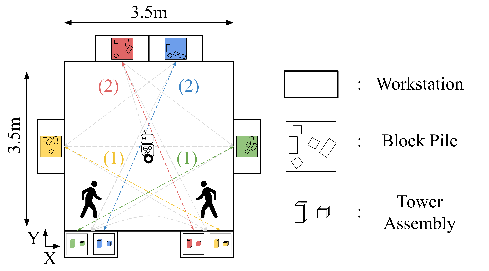
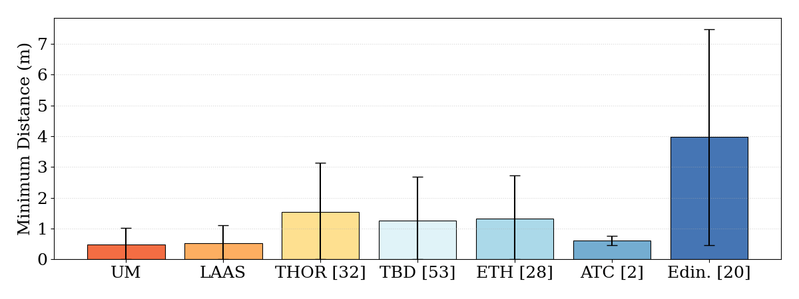
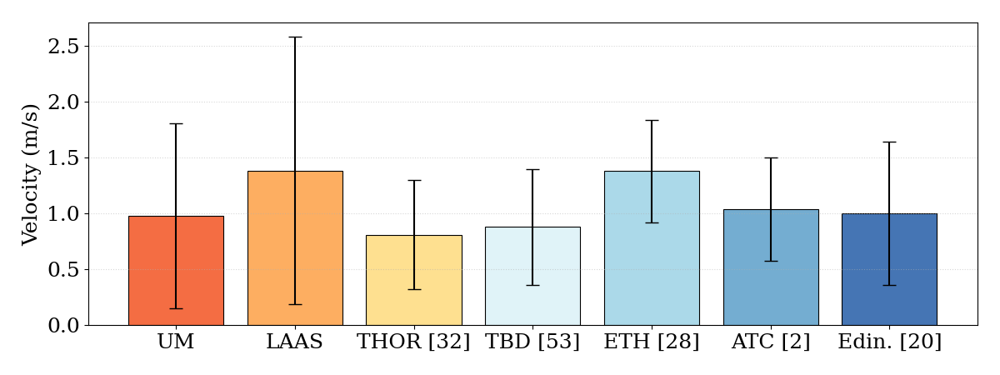
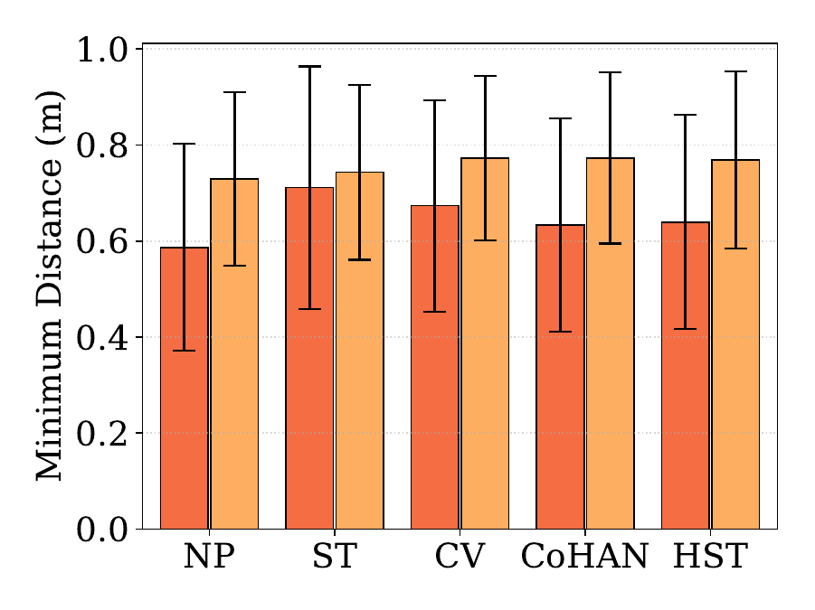
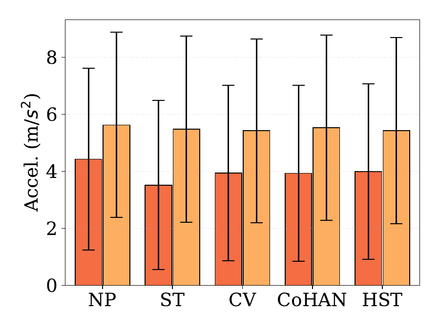
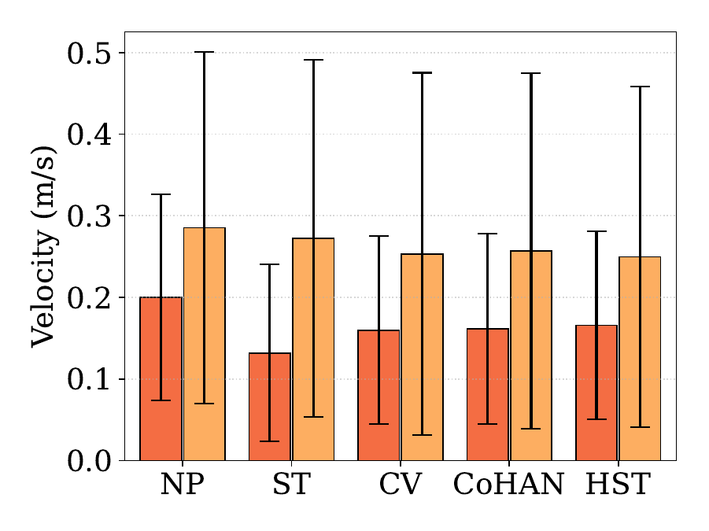
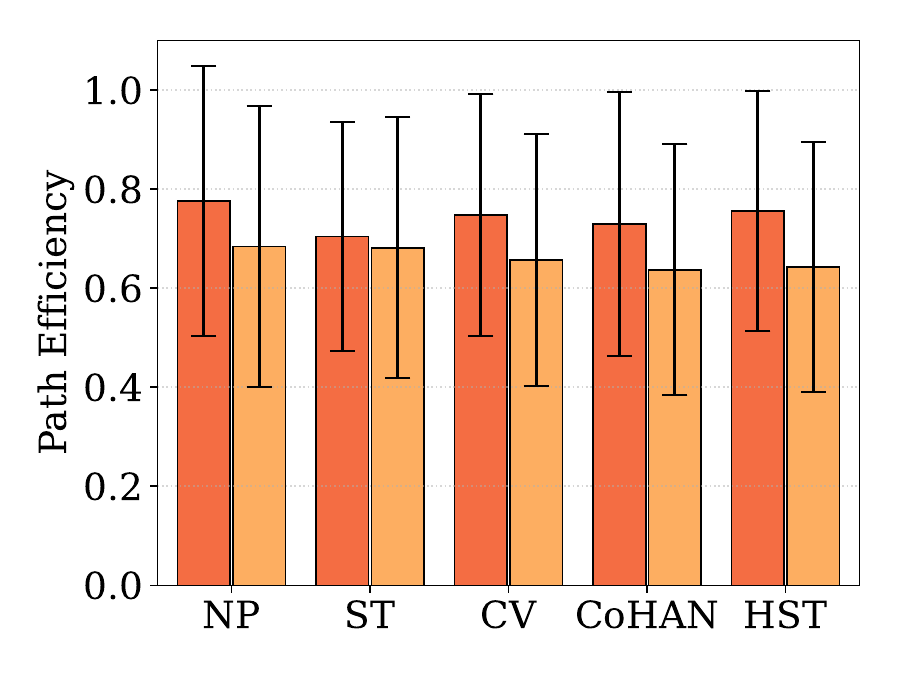

Experimental Setup
Our data is collected in a laboratory setting with two humans and one robot. Each navigates a shared workspace completing a block stacking task designed to emulate close-proximity settings such as homes, hospitals, and warehouses.

Our dataset has diversity in robot platforms and cultural background, being collected at two sites: the University of Michigan in the USA and LAAS-CNRS in France. The full dataset includes 74 participants, totaling 10.5 hours of data.

UM

LAAS
Analysis
We compare our dataset to several existing datasets and find it has the highest standard deviation in human velocity, lowest minimum distance at both sites, and highest average velocity at LAAS. These statistics show the human motion in Bi3 is diverse and challenging.


Our dataset contians further diversity in terms of robot motion, which we generated using a model predictive controller leveraging five distinct human motion prediction models. We quantify aspects of the robot motion, and find that the motion differed substantially across sites. Although the motion statistics for CV, CoHAN, and HST are similar, our user impression data for them are very different (see in the paper), validating the importance of our collected user impressions.




If you find our dataset relevant, please cite it using the reference below:
BibTeX
@inproceedings{stratton2026bi3dataset,
author = {Stratton, Andrew and Singamaneni, Phani Teja and Goyal, Pranav and Alami, Rachid and Mavrogiannis, Christoforos},
title = {Bi3: A Biplatform, Bicultural, Biperson Dataset for Social Robot Navigation},
booktitle = {Proceedings of the IEEE International Conference on Robotics and Automation (ICRA)},
year = {2026},
}User Study
We have also published a separate, detailed work on the human subject study this dataset was created in service of. Check it out here.